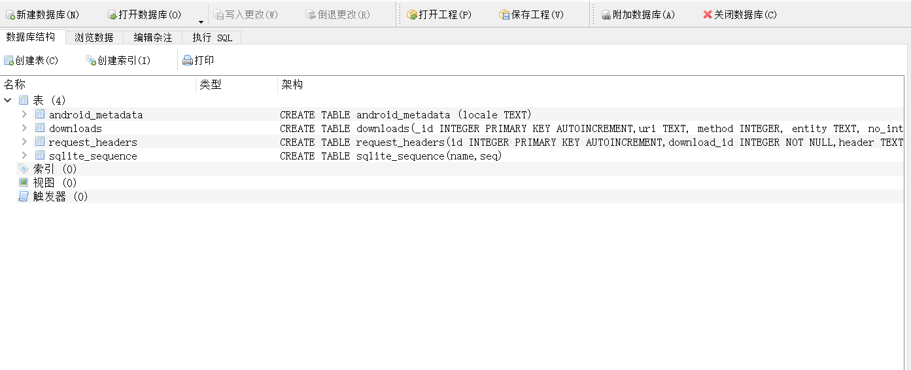

# 楔子
移动安全实验报告
# 实验目的
通过提取 app 内的资源来了解 app 用什么类型的数据结构来存储重要的信息以及它们存储哪些类型的信息，例如：分数排行榜、口令、联系人和电子邮件列表。除了能让你把最高分设成负数之外，这也是个从 app 的后端影响其行为的有效方法。这也使你能从这一角度了解关于 app 是如何保护其用户数据的。例如，数据是否加密，如何加密的？app 是否保护用户数据的完整性？另外，在进行逆向工程和评估 app 安全性时，这也是非常有用的技能。
# 实验原理
使用 adb 调试桥查看 app 的关键资源并对其进行分析
# 实验步骤
- adb 连接 雷电模拟器
雷电模拟器自带了一份 adb，在其安装目录下。
D:\Tools\dnplayer2>adb kill-server | |
D:\Tools\dnplayer2>adb devices | |
* daemon not running. starting it now on port 5037 * | |
* daemon started successfully * | |
List of devices attached | |
emulator-5554 device |
完成之后，会 list 出所有设备
- 首先获取当前已连接 Android 设备的 shell
adb shell [可选参数指定设备]
D:\Tools\dnplayer2>adb shell | |
root@x86:/ # |
- 切换到 /data/data 目录
cd /data/data
root@x86:/ # cd /data/data | |
cd /data/data | |
root@x86:/data/data # ls | |
ls | |
com.android.basicsmsreceiver | |
com.android.browser | |
com.android.captiveportallogin | |
com.android.certinstaller | |
com.android.contacts | |
com.android.defcontainer | |
com.android.documentsui | |
com.android.emu.coreservice | |
com.android.emu.inputservice | |
com.android.externalstorage | |
com.android.gallery | |
com.android.googleinstaller | |
com.android.htmlviewer | |
com.android.inputdevices | |
com.android.keychain | |
com.android.launcher3 | |
com.android.location.fused | |
com.android.mms.service | |
com.android.packageinstaller | |
com.android.pacprocessor | |
com.android.phone | |
com.android.providers.calendar | |
com.android.providers.contacts | |
com.android.providers.downloads | |
com.android.providers.downloads.ui | |
com.android.providers.media | |
com.android.providers.settings | |
com.android.providers.telephony | |
com.android.providers.userdictionary | |
com.android.provision | |
com.android.proxyhandler | |
com.android.server.telecom | |
com.android.settings | |
com.android.sharedstoragebackup | |
com.android.shell | |
com.android.systemui | |
com.android.vpndialogs | |
com.android.webview | |
com.cyanogenmod.filemanager | |
com.h5gamecenter.h2mgc | |
com.kx.hockey | |
com.svox.pico | |
com.xiaomi.gamecenter | |
jackpal.androidterm | |
root@x86:/data/data # |
- 列出文件的访问权限、创建时间、修改时间以及其他一些元数据
ls -al
root@x86:/data/data # ls -al | |
ls -al | |
drwxr-x--x u0_a10 u0_a10 2021-12-15 17:12 com.android.basicsmsreceiver | |
drwxr-x--x u0_a11 u0_a11 2021-12-15 17:23 com.android.browser | |
drwxr-x--x u0_a13 u0_a13 2021-12-15 17:12 com.android.captiveportallogin | |
drwxr-x--x u0_a14 u0_a14 2021-12-15 17:24 com.android.certinstaller | |
drwxr-x--x u0_a1 u0_a1 2021-12-15 17:12 com.android.contacts | |
drwxr-x--x u0_a2 u0_a2 2021-12-15 17:13 com.android.defcontainer | |
drwxr-x--x u0_a15 u0_a15 2021-12-15 17:52 com.android.documentsui | |
drwxr-x--x u0_a16 u0_a16 2021-12-15 17:12 com.android.emu.coreservice | |
drwxr-x--x u0_a17 u0_a17 2021-12-15 17:12 com.android.emu.inputservice | |
drwxr-x--x u0_a4 u0_a4 2021-12-15 17:52 com.android.externalstorage | |
drwxr-x--x u0_a3 u0_a3 2021-12-15 17:12 com.android.gallery | |
drwxr-x--x u0_a18 u0_a18 2021-12-15 17:12 com.android.googleinstaller | |
drwxr-x--x u0_a19 u0_a19 2021-12-15 17:12 com.android.htmlviewer | |
drwxr-x--x system system 2021-12-15 17:12 com.android.inputdevices | |
drwxr-x--x system system 2021-12-15 17:52 com.android.keychain | |
drwxr-x--x u0_a20 u0_a20 2021-12-15 17:12 com.android.launcher3 | |
drwxr-x--x system system 2021-12-15 17:12 com.android.location.fused | |
drwxr-x--x radio radio 2021-12-15 17:12 com.android.mms.service | |
drwxr-x--x u0_a22 u0_a22 2021-12-15 17:52 com.android.packageinstaller | |
drwxr-x--x u0_a21 u0_a21 2021-12-15 17:12 com.android.pacprocessor | |
drwxr-x--x radio radio 2021-12-15 17:12 com.android.phone | |
drwxr-x--x u0_a0 u0_a0 2021-12-15 17:12 com.android.providers.calendar | |
drwxr-x--x u0_a1 u0_a1 2021-12-15 17:12 com.android.providers.contacts | |
drwxr-x--x u0_a3 u0_a3 2021-12-15 17:12 com.android.providers.downloads | |
drwxr-x--x u0_a3 u0_a3 2021-12-15 17:12 com.android.providers.downloads.ui | |
drwxr-x--x u0_a3 u0_a3 2021-12-15 17:12 com.android.providers.media | |
drwxr-x--x system system 2021-12-15 17:12 com.android.providers.settings | |
drwxr-x--x radio radio 2021-12-15 17:12 com.android.providers.telephony | |
drwxr-x--x u0_a1 u0_a1 2021-12-15 17:12 com.android.providers.userdictionary | |
drwxr-x--x u0_a24 u0_a24 2021-12-15 17:12 com.android.provision | |
drwxr-x--x u0_a5 u0_a5 2021-12-15 17:12 com.android.proxyhandler | |
drwxr-x--x system system 2021-12-15 17:12 com.android.server.telecom | |
drwxr-x--x system system 2021-12-15 17:21 com.android.settings | |
drwxr-x--x u0_a6 u0_a6 2021-12-15 17:12 com.android.sharedstoragebackup | |
drwxr-x--x shell shell 2021-12-15 17:12 com.android.shell | |
drwxr-x--x u0_a7 u0_a7 2021-12-15 17:12 com.android.systemui | |
drwxr-x--x u0_a8 u0_a8 2021-12-15 17:12 com.android.vpndialogs | |
drwxr-x--x u0_a26 u0_a26 2021-12-15 17:12 com.android.webview | |
drwxr-x--x u0_a12 u0_a12 2021-12-15 17:23 com.cyanogenmod.filemanager | |
drwxr-x--x u0_a25 u0_a25 2021-12-15 17:12 com.h5gamecenter.h2mgc | |
drwxr-x--x u0_a32 u0_a32 2021-12-19 14:33 com.kx.hockey | |
drwxr-x--x u0_a23 u0_a23 2021-12-15 17:13 com.svox.pico | |
drwxr-x--x u0_a27 u0_a27 2021-12-15 17:12 com.xiaomi.gamecenter | |
drwxr-x--x u0_a9 u0_a9 2021-12-15 18:05 jackpal.androidterm | |
root@x86:/data/data # |
data 目录的拥有者 (owner) 和组 (group)—— 列表中左起第一列和第二列。这里，拥有者实际上就是 app 本身。
Linux 默认情况下是在 app 的拥有者权限下运行 app 的，这实际上就是 app 的沙箱是如何运作的。
如果一个 app 需要获得一个它原本无权访问的资源的访问权限时，Linux 就会把它加到相应的组中。
- 一次性地查看 app 的所有资源和元数据
ls -alR */
会被一大堆目录列表占满，我们把它重定向到一个文件中去。
如只显示数据库: ls -alR */databases/
root@x86:/data/data # ls -alR */databases/ | |
ls -alR */databases/ | |
com.android.browser/databases/: | |
-rw-rw---- u0_a11 u0_a11 4096 2021-12-15 17:23 browser2.db | |
-rw------- u0_a11 u0_a11 32768 2021-12-15 17:23 browser2.db-shm | |
-rw------- u0_a11 u0_a11 362592 2021-12-15 17:23 browser2.db-wal | |
com.android.documentsui/databases/: | |
-rw-rw---- u0_a15 u0_a15 36864 2021-12-15 17:52 recents.db | |
-rw------- u0_a15 u0_a15 8720 2021-12-15 17:52 recents.db-journal | |
com.android.keychain/databases/: | |
-rw-rw---- system system 20480 2021-12-15 17:52 grants.db | |
-rw------- system system 8720 2021-12-15 17:52 grants.db-journal | |
com.android.launcher3/databases/: | |
-rw-rw---- u0_a20 u0_a20 65536 2021-12-19 14:33 launcher.db | |
-rw------- u0_a20 u0_a20 29240 2021-12-19 14:33 launcher.db-journal | |
com.android.providers.calendar/databases/: | |
-rw-rw---- u0_a0 u0_a0 122880 2021-12-15 17:12 calendar.db | |
-rw------- u0_a0 u0_a0 25136 2021-12-15 17:12 calendar.db-journal | |
com.android.providers.contacts/databases/: | |
-rw-rw---- u0_a1 u0_a1 307200 2021-12-15 17:12 contacts2.db | |
-rw-rw---- u0_a1 u0_a1 0 2021-12-15 17:12 contacts2.db-journal | |
-rw-rw---- u0_a1 u0_a1 307200 2021-12-15 17:12 profile.db | |
-rw-rw---- u0_a1 u0_a1 16928 2021-12-15 17:12 profile.db-journal | |
com.android.providers.downloads/databases/: | |
-rw-rw---- u0_a3 u0_a3 24576 2021-12-15 17:12 downloads.db | |
-rw------- u0_a3 u0_a3 8720 2021-12-15 17:12 downloads.db-journal | |
com.android.providers.media/databases/: | |
-rw-rw---- u0_a3 u0_a3 163840 2021-12-19 14:33 external.db | |
-rw------- u0_a3 u0_a3 32768 2021-12-19 14:33 external.db-shm | |
-rw------- u0_a3 u0_a3 461472 2021-12-19 14:33 external.db-wal | |
-rw-rw---- u0_a3 u0_a3 135168 2021-12-15 17:12 internal.db | |
-rw------- u0_a3 u0_a3 32768 2021-12-19 14:33 internal.db-shm | |
-rw------- u0_a3 u0_a3 428512 2021-12-19 14:33 internal.db-wal | |
com.android.providers.settings/databases/: | |
-rw-rw---- system system 69632 2021-12-15 17:43 settings.db | |
-rw------- system system 21032 2021-12-15 17:43 settings.db-journal | |
com.android.providers.telephony/databases/: | |
-rw-rw---- radio radio 57344 2021-12-15 17:12 HbpcdLookup.db | |
-rw------- radio radio 8720 2021-12-15 17:12 HbpcdLookup.db-journal | |
-rw-rw---- radio radio 102400 2021-12-15 17:12 mmssms.db | |
-rw------- radio radio 8720 2021-12-15 17:12 mmssms.db-journal | |
-rw-rw---- radio radio 389120 2021-12-15 17:12 telephony.db | |
-rw------- radio radio 8720 2021-12-15 17:12 telephony.db-journal | |
com.android.settings/databases/: | |
-rw-rw---- system system 45056 2021-12-15 17:21 search_index.db | |
-rw------- system system 29240 2021-12-15 17:21 search_index.db-journal | |
com.cyanogenmod.filemanager/databases/: | |
-rw-rw---- u0_a12 u0_a12 16384 2021-12-15 17:23 bookmarks.db | |
-rw------- u0_a12 u0_a12 8720 2021-12-15 17:23 bookmarks.db-journal | |
-rw-rw---- u0_a12 u0_a12 20480 2021-12-15 18:46 mime_type_index | |
-rw------- u0_a12 u0_a12 12824 2021-12-15 18:46 mime_type_index-journal | |
com.h5gamecenter.h2mgc/databases/: | |
-rw-rw---- u0_a25 u0_a25 28672 2021-12-15 17:12 geofencing.db | |
-rw------- u0_a25 u0_a25 8720 2021-12-15 17:12 geofencing.db-journal | |
-rw-rw---- u0_a25 u0_a25 20480 2021-12-15 17:12 mistat.db | |
-rw------- u0_a25 u0_a25 8720 2021-12-15 17:12 mistat.db-journal | |
-rw-rw---- u0_a25 u0_a25 16384 2021-12-15 17:12 tiny_name_stat.db | |
-rw------- u0_a25 u0_a25 8720 2021-12-15 17:12 tiny_name_stat.db-journal | |
com.xiaomi.gamecenter/databases/: | |
-rw-rw---- u0_a27 u0_a27 24576 2021-12-15 17:12 downloads.db | |
-rw------- u0_a27 u0_a27 8720 2021-12-15 17:12 downloads.db-journal | |
-rw-rw---- u0_a27 u0_a27 110592 2021-12-15 19:15 gamecenter_v2 | |
-rw------- u0_a27 u0_a27 12824 2021-12-15 19:15 gamecenter_v2-journal | |
-rw-rw---- u0_a27 u0_a27 40960 2021-12-19 14:39 gamecenter_v2_report.db | |
-rw------- u0_a27 u0_a27 25136 2021-12-19 14:39 gamecenter_v2_report.db-journal | |
-rw-rw---- u0_a27 u0_a27 28672 2021-12-15 17:12 geofencing.db | |
-rw------- u0_a27 u0_a27 8720 2021-12-15 17:12 geofencing.db-journal | |
-rw-rw---- u0_a27 u0_a27 49152 2021-12-15 17:12 miliao | |
-rw------- u0_a27 u0_a27 8720 2021-12-15 17:12 miliao-journal | |
-rw-rw---- u0_a27 u0_a27 20480 2021-12-15 17:12 mistat.db | |
-rw------- u0_a27 u0_a27 8720 2021-12-15 17:12 mistat.db-journal | |
-rw-rw---- u0_a27 u0_a27 16384 2021-12-15 17:12 report2.db | |
-rw------- u0_a27 u0_a27 8720 2021-12-15 17:12 report2.db-journal | |
root@x86:/data/data # |
只显示所有的文件，或者每个 app 保存在 /files/ 目录中的东西:ls -alR */files/
也可以搜索指定类型的文件 (根据扩展名)，下面是一些例子:
• ls -al //* .xml
• 1s -al //* .png
• ls -al //* .mp3
- 用 adb pull 拷贝 DB 文件到本地
找到你想找的文件之后，就用 adb pull 命令，把它们从你的手机上复制出来。adb pull /data/data/[包名]/[文件路径]
我们在这里要做的就是列出不同的文件类型。其中一类是 sqlite 数据库，目录中的 DB 文件。 查看 DB 文件可以使用 sqlite3，Android SDK 中自带 sqlite3 工具，也可以使用 SQLite Expert Personal 工具。
用下面这条命令把 DB 文件提取到你的计算机的本地目录中:adb pull /data/data/[包名]/databases/[数据库文件名]
D:\Tools\dnplayer2>adb pull /data/data/com.android.providers.downloads/databases/downloads.db F:/ | |
2049 KB/s (24576 bytes in 0.011s) |
- 分析 DB 文件
